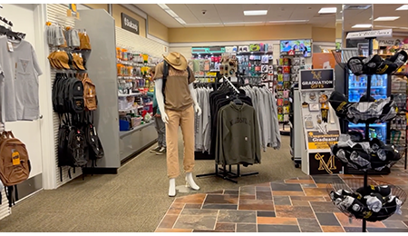
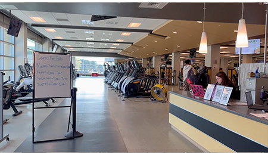
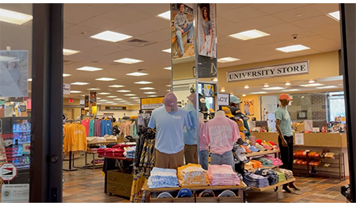

Dan Zalewski's AENG 110 Portfolio |
||
| Home Bookmark Digital Photography Videography Infographic About Me |
Videography |
|
|
Videography is the use of digital or film equipment to record segments of video and then use post-production processes of editing, sound mixing, and coloring to create a final product that creates a complete narrative. Video projects can be further enhanced with proper pre-production planning, such as scripting, to ensure the project has an intended looks and feel that it aims to envoke.
|
|
Screenshots from the Project |
|
|  | |
|  |  |
Reflecting on my Project
Looking back on this project, I'm generally satisfied with how it turned out based on the timetable and challenges faced during production and post-production. I think that I did a good job to not overtake too much of the responsibility on the project and allow my classmates to shine with their own contributions.
|
|
| Home My Favorite Project My Youtube About Me |
Copyright © 2025 Dan Zalewski |
|